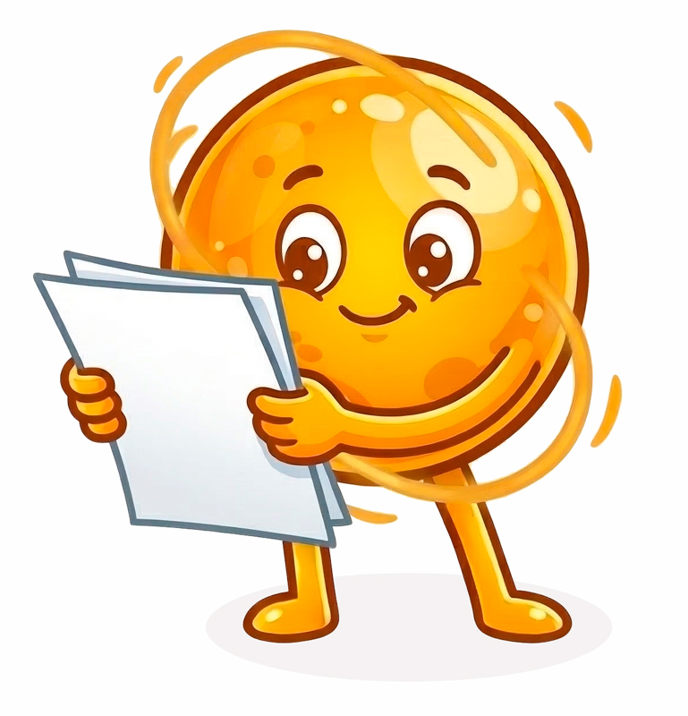

🎯 Misión: Diana láser
¡Llegó el momento de comprobar nuestras ideas! Después de debatir y proponer hipótesis, vamos a ponerlas a prueba con un experimento directo y sencillo.
🧰 Materiales que necesitas
- 1 puntero láser.
- 1 espejo plano (sin aumento).
- Papel aluminio (una lámina lisa).
- Una imagen o dibujo de una diana.
- Una regla o cinta métrica.
- Cinta adhesiva o tirro.
- Lápiz o marcador.
- Objetos que sirvan de soporte para el espejo y la diana (opcional)
📜 Instrucciones de montaje
1️⃣ Con la regla o cinta métrica, marca una línea recta de la longitud que prefieras sobre una mesa o el suelo.
2️⃣ Marca tres puntos sobre esa línea:
Zona 1: Un extremo donde colocarás la diana.
Zona 2: El punto medio (exactamente la mitad de la distancia).
Zona 3: El otro extremo, desde donde sostendrás el láser.
3️⃣ Pega la diana en la Zona 1. Puedes usar un soporte para darle algo de altura, pero asegúrate de que luego puedas apuntar el láser hacia ella.
4️⃣ En la Zona 2, coloca el espejo en posición vertical unos centímetros hacia un lado de la línea marcada, pero asegúrate de que su superficie "mire" hacia la línea.
🧪 Procedimiento experimental
1️⃣ Desde la Zona 3, apunta el láser hacia el espejo. Intenta que el puntero esté a la misma altura que la diana.
¿Lograste acertar en el centro del blanco? Si no fue así, ¿qué ajustes tuviste que hacer con el láser?
| ✋🏻 No debes moverte de tu posición en la Zona 3, solo puedes girar la muñeca para cambiar la dirección. |
2️⃣ Ahora sustituye el espejo por el papel aluminio liso en la misma posición. Repite el procedimiento.
¿El punto láser logra llegar a la diana? ¿Notas cambios en el brillo o la nitidez comparado con el espejo?
3️⃣Finalmente, arruga el papel aluminio, estíralo ligeramente y colócalo de nuevo.
¿Qué ocurrió con el punto de luz? ¿Sigue siendo nítido o se convirtió en una mancha?
⚠️ ¡Atención!
|
Nunca apuntes el láser hacia los ojos ni hacia el rostro de ninguna persona. Su luz puede ser perjudicial para la vista. |
Analicemos los resultados
Después de realizar el experimento, detente un momento y reflexiona:
- Cuando utilizaste el espejo, ¿qué ocurrió con el punto láser?
- Con el papel aluminio liso, ¿el comportamiento fue parecido o cambió radicalmente?
- Cuando el papel aluminio estaba arrugado, ¿qué diferencia notaste en la forma del punto luminoso?

💡 ¡Eureka!
1️⃣ En el experimento pudimos observar que el espejo y el papel aluminio liso permiten que el láser cambie de dirección y llegue a la diana, siempre que el puntero esté orientado adecuadamente.
2️⃣ También notamos que, cuando el papel aluminio está arrugado, el punto de luz deja de ser nítido y se esparce, lo que impide que se concentre en un solo lugar.
3️⃣ Esto sugiere que la luz no cambia de dirección de forma aleatoria, sino que parece seguir una regla geométrica cuando incide sobre superficies lisas y brillantes.
🤔 Ahora piensa en lo que ocurrió y responde: ¿Cómo es exactamente el recorrido del rayo de luz desde que sale del puntero hasta que llega a la diana después de incidir en el espejo?
👉🏻 Recuerda: el rayo láser viaja en línea recta.